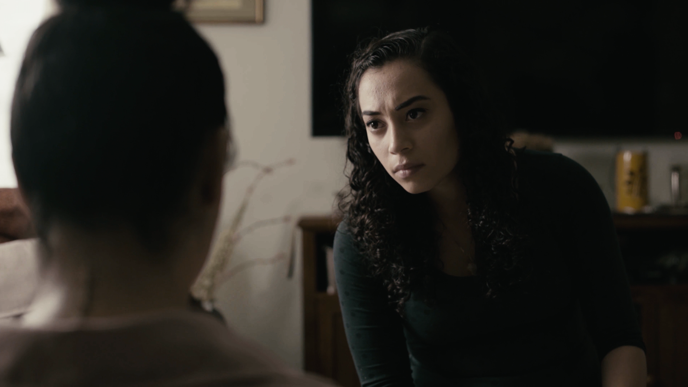
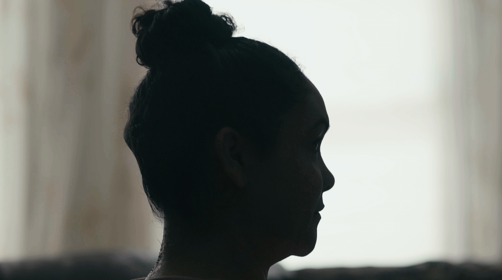
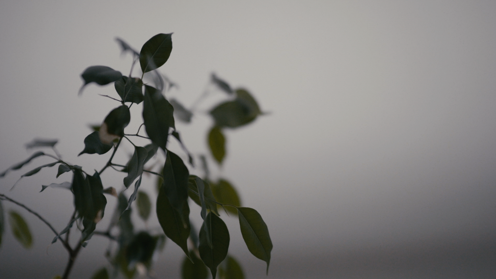
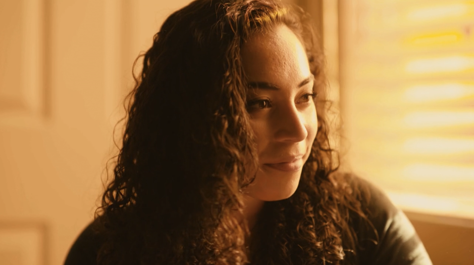
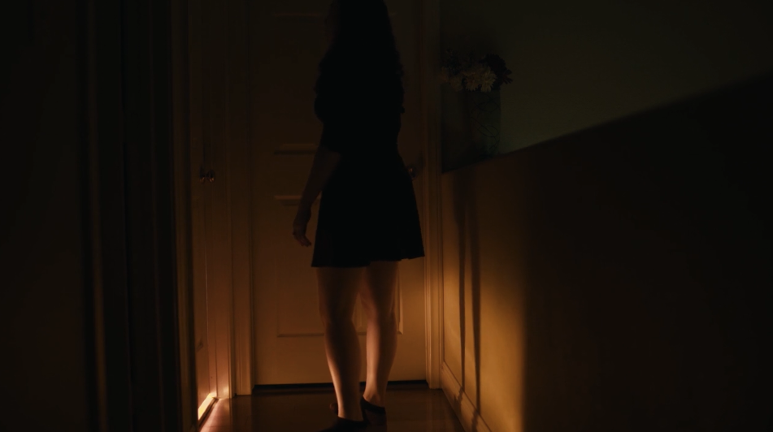

An Arrangement of Skin
Type
Short Film
Director
Veronica Castillo
Year
2017
"A story about two estranged sisters who must wait for their mother to arrive at their childhood home. With the arrival pending, the sisters attempt to approach and reconcile unresolved issues from their layered past."
✨ Nominated for the Student Heritage Award by ASC, 2017
✨ Awarded Audience Award at Spring Flicks Short Film Festival, 2017
✨ Screened at Shawna Shea Film Festival, Spring Shorts, 2018



